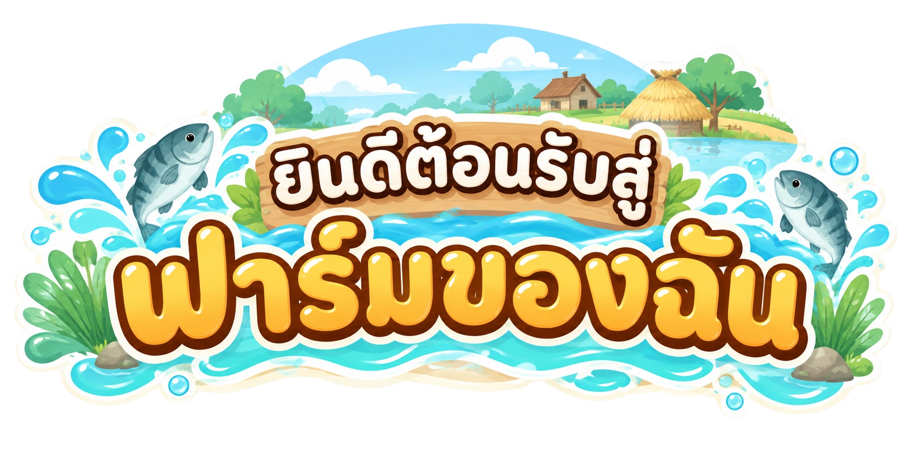

แอปที่ช่วยเกษตรกรจัดการข้อมูลทางการเงินของฟาร์ม
สามารถบันทึกรายรับ–รายจ่าย คำนวณกำไร–ขาดทุน
และใช้ระบบวิเคราะห์ข้อมูลเพื่อช่วยบริหารต้นทุนของฟาร์ม
เริ่มต้นบันทึกข้อมูลการเลี้ยงปลาเศรษฐกิจของคุณได้เลย